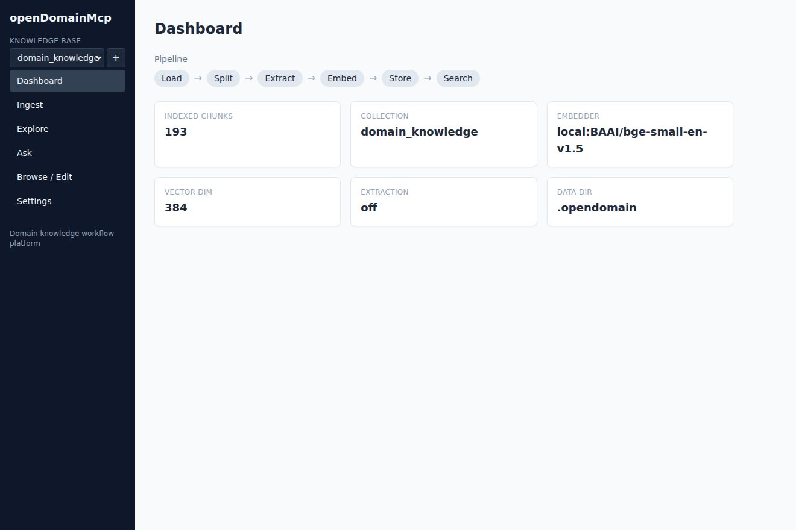
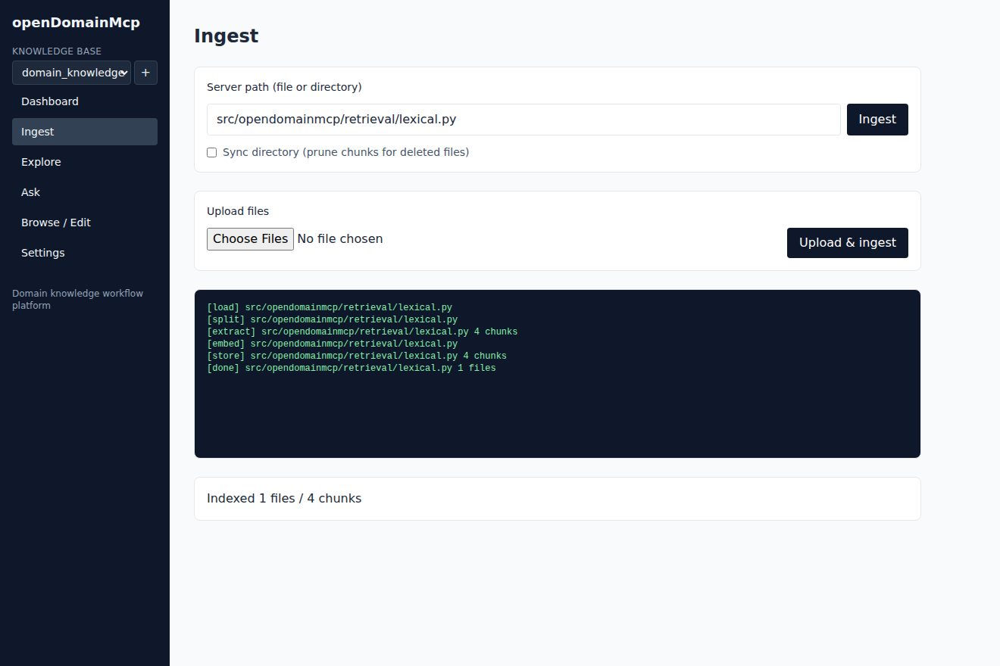
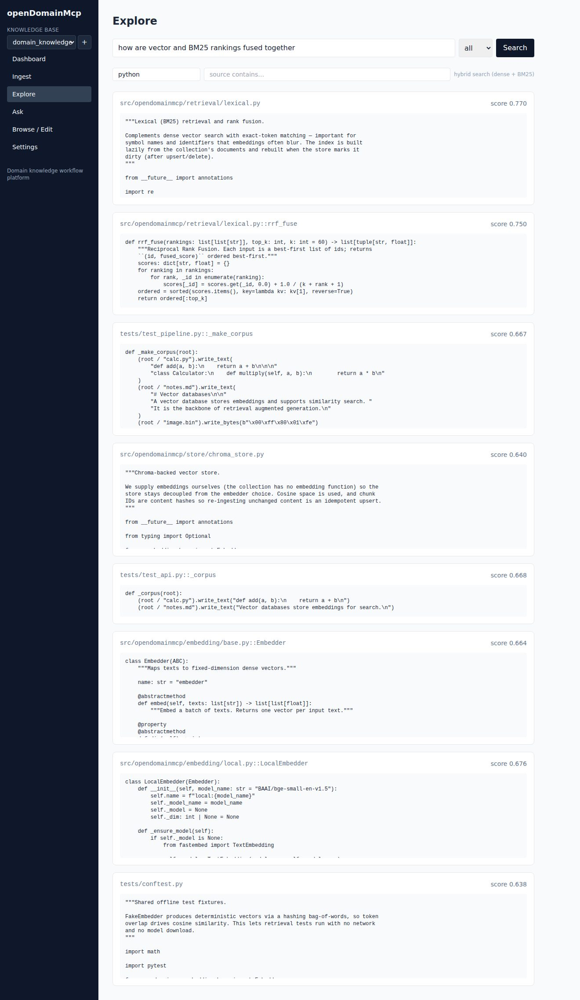
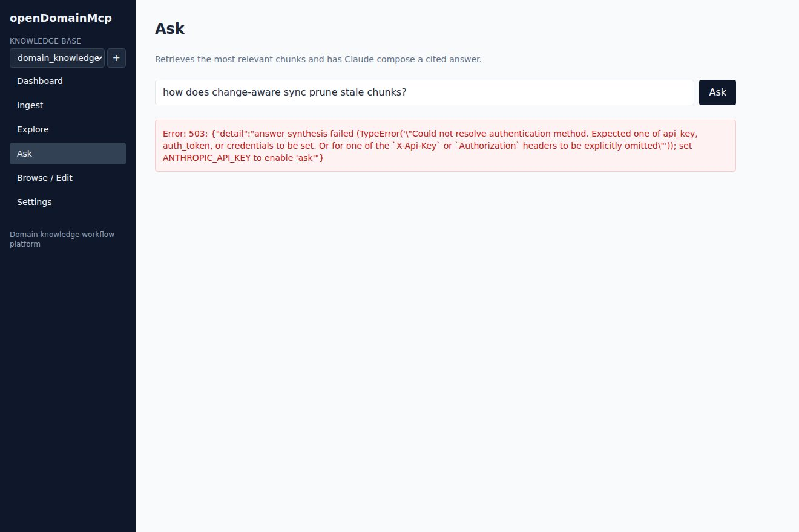
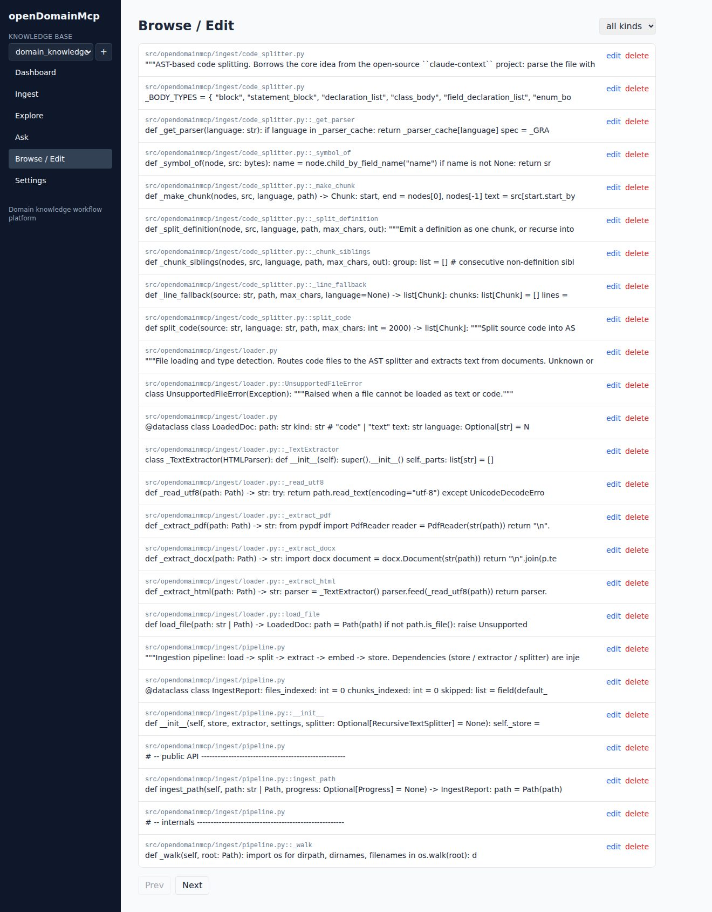
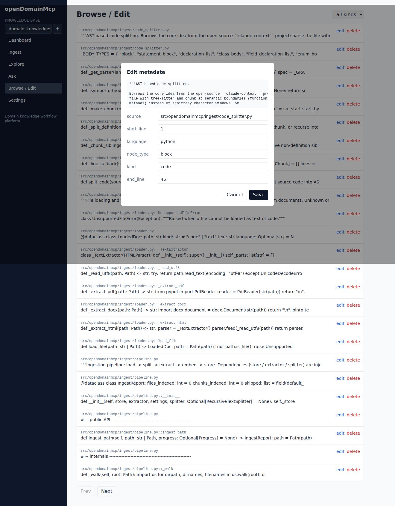
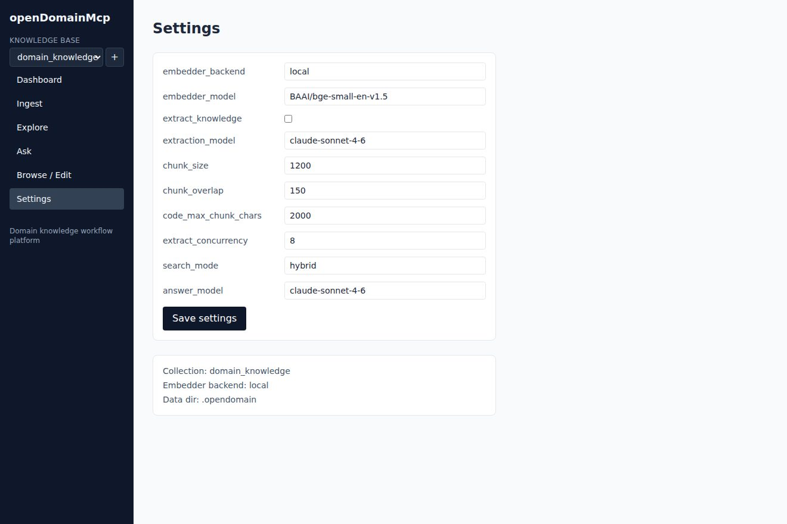

以下畫面取自實際啟動的服務。我們把平台本身的原始碼（Python 後端、React／TypeScript 前端、測試與文件， 共 41 個檔案、189 個片段）餵進系統，再逐頁操作擷取。所有數字與搜尋結果都是真實資料，並非示意圖。
資料庫現況一目了然：189 個已索引片段、集合名稱、使用中的嵌入模型與 384 維向量，上方並標出管線各階段。

輸入伺服器端路徑後開始匯入，下方以 SSE 即時顯示 load → split → extract → embed → store 的逐步進度， 完成後回報「Indexed 1 files / 9 chunks」。

採 dense + BM25 混合檢索（RRF 融合），並以 language 過濾（此處 python）與 source 子字串縮小範圍。 每張卡片標示來源、符號與相似度分數。

檢索最相關片段後，交由 Claude 合成附 [n] 引用的答案。此沙箱無金鑰，因此頁面 明確回報需要設定 ANTHROPIC_API_KEY—— 正是「Fail Loud」原則的實際呈現。

以列表檢視所有已儲存的片段，每筆顯示來源與符號名稱，右側可直接編輯或刪除。

點開任一筆即可編輯其中繼資料（語言、符號、行號、kind 等），存檔後立即生效。

嵌入後端、嵌入模型、是否萃取知識、切塊大小等參數，皆可於頁面調整並寫入設定檔。
